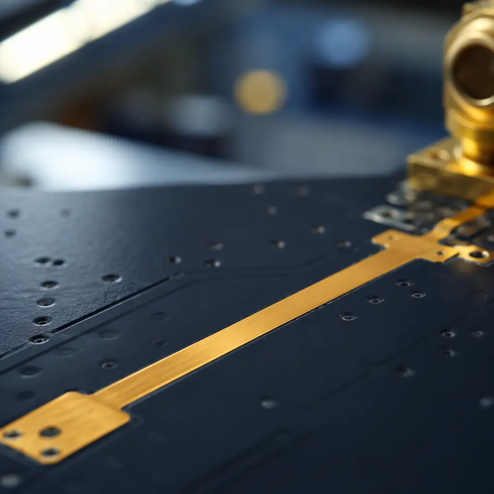
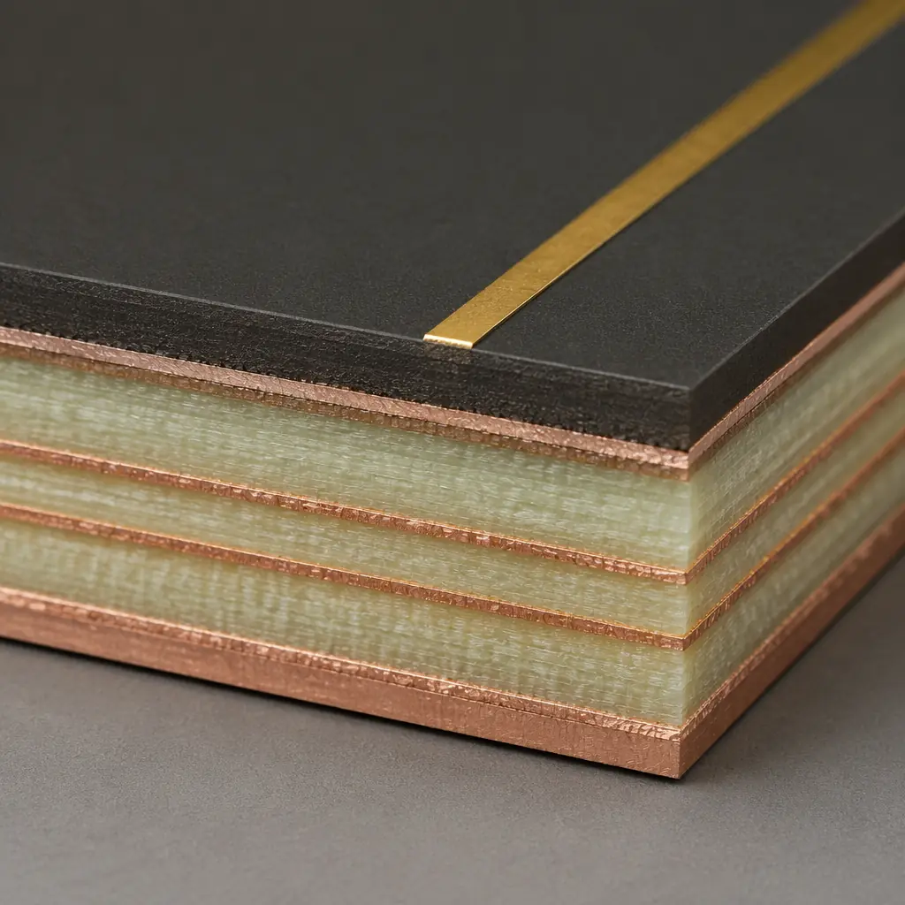

5G networks are rolling out millimeter-wave (mmWave) spectrum globally — 28 GHz in the US and Japan, 39 GHz in the US, and 26 GHz across Europe and China. Unlike sub-6 GHz FR1 bands where standard FR-4 still works, mmWave frequencies demand a fundamentally different approach to PCB design. Copper surface roughness, dielectric constant variation across temperature, and even the weave pattern of your glass fabric become first-order performance variables. This guide covers the material selection, antenna integration, and fabrication decisions that determine whether your mmWave PCB meets its link budget — or loses 3 dB before the signal reaches the antenna.
At Huaxing PCBA, we manufacture mmWave PCBs on low-loss laminates including Rogers RO3003, RO4835, and Isola Astra MT77 across 8 SMT lines with automated impedance testing to ±5% tolerance. Our facility holds IATF 16949 and ISO 9001 certifications, supporting 5G infrastructure OEMs from prototype through volume production.

Why mmWave PCB Design Is Fundamentally Different
At 28 GHz, the free-space wavelength is approximately 10.7 mm. On a PCB with a dielectric constant (Dk) of ~3.5, the guided wavelength shrinks to roughly 5.7 mm. This means a quarter-wave stub — a structure that's millimeters long on a sub-6 GHz board — is now under 1.5 mm. Transmission line losses that designers ignore at 2.4 GHz become the dominant loss mechanism at mmWave. There are three phenomena that drive this transition:
Copper Surface Roughness Becomes a Dielectric Loss Amplifier
At sub-6 GHz, current flows through the bulk cross-section of a trace. At mmWave, skin depth shrinks to under 0.4 µm — meaning all current travels along the copper surface. Standard electrodeposited (ED) copper with 2–4 µm RMS roughness forces the signal through a jagged path that increases effective conductor length by 30–60%, directly translating to insertion loss. Reverse-treated foil (RTF) or rolled annealed copper with roughness below 0.5 µm RMS is essential. See our PCB materials selection guide for laminate roughness comparisons.
Glass Weave Skew Creates Differential Phase Error
Standard 1080 or 2116 glass fabric has a non-uniform weave pattern — glass bundles and resin-rich regions alternate every 1–2 mm. At mmWave, a differential pair routed over these alternating regions sees a Dk that fluctuates between ~3.0 (resin-rich) and ~6.5 (glass bundle). This creates intra-pair skew that can exceed 5° per cm at 39 GHz — enough to destroy the null depth of a phased array beamformer. Spread glass or mechanically spread fabric with flat Dk distribution is mandatory. Our impedance control guide covers the fabrication side of managing Dk uniformity.
Fabrication Tolerances That Were "Close Enough" Now Kill Performance
A ±0.025 mm (1 mil) trace width variation on a 50 Ω line creates roughly 1 Ω of impedance shift at any frequency. At sub-6 GHz, the resulting return loss is manageable. At 39 GHz, the same 1 Ω shift from a 0.5 mm-wide grounded coplanar waveguide drops return loss from −25 dB to −15 dB — enough to violate the link budget of a 64-QAM OFDM signal. Etching tolerance must be specified at ±10 µm or tighter, with automated optical inspection (AOI) on every panel. Read our PCB stackup design guide for fabrication tolerance specifications.
Key Takeaway: At mmWave, you are no longer designing a PCB — you are designing a distributed RF structure where every material parameter and every fabrication tolerance is a first-order electrical variable. Standard FR-4 boards lose 3–5 dB/inch at 28 GHz; the right laminate keeps loss under 0.8 dB/inch.
Material Selection: Low-Loss Laminates for 28 GHz and 39 GHz
The laminate is the single largest lever for mmWave PCB performance. Three material properties dominate the decision: dielectric constant (Dk) and its temperature coefficient (TCDk), dissipation factor (Df), and the copper foil profile. Here is how the leading mmWave-grade laminates compare at 28 GHz:
| Laminate | Dk @ 28 GHz | Df @ 28 GHz | TCDk (ppm/°C) | Copper Foil | Best For |
|---|---|---|---|---|---|
| Rogers RO3003 | 3.00 ± 0.04 | 0.0010 | −3 | ED (standard) | Phased arrays, beamformers |
| Rogers RO4835 | 3.48 ± 0.05 | 0.0037 | +50 | RTF (optional) | CPE, small cells |
| Isola Astra MT77 | 3.00 ± 0.04 | 0.0017 | −30 | RTF (standard) | Base stations, backhaul |
| Panasonic M6G | 3.40 ± 0.05 | 0.0020 | +40 | HVLP | Multi-layer mmWave HDI |
| Taconic RF-35TC | 3.50 ± 0.05 | 0.0018 | −45 | RTF | Power amplifiers |
Dk Stability Across Temperature Is the Hidden Parameter
A phased array antenna designed for 28 GHz will shift its beam angle if the substrate Dk changes with temperature. RO3003's TCDk of −3 ppm/°C means a 60°C temperature rise shifts Dk by only 0.00018 — negligible. RO4835's +50 ppm/°C shifts Dk by 0.002 over the same range, enough to detune resonant antenna elements by 30–40 MHz. For outdoor base station equipment that cycles from −20°C to +70°C, TCDk matters as much as Df. For more on laminate selection trade-offs, see our laminate selection guide.
Hybrid Stackups: RF Laminate on FR-4 Core
Pure Rogers or Isola boards are expensive — a 4-layer RO3003 board costs 5–8× more than FR-4. The industry standard for cost-sensitive mmWave products (CPE, small cells) is a hybrid stackup: Rogers RO4835 or Isola MT77 for the top RF layers (microstrip patches, feed networks, ground plane) bonded to an FR-4 core for power distribution and digital routing. The critical rule: never route controlled-impedance traces through a transition between different laminate types. See our PCB cost factors guide for hybrid stackup cost modeling.

Antenna Integration: Antenna-in-Package vs Antenna-on-PCB
At mmWave, the antenna array is no longer a separate component — it is integrated into the PCB stackup. Two architectures dominate: Antenna-on-PCB (AoP) where patch arrays are etched directly onto the top copper layer, and Antenna-in-Package (AiP) where the antenna array is embedded in the IC package substrate. The choice between them shapes your entire PCB design.
| Parameter | Antenna-on-PCB (AoP) | Antenna-in-Package (AiP) |
|---|---|---|
| Feed loss (28 GHz) | 2–4 dB (long trace from IC) | 0.5–1 dB (short bond) |
| Design flexibility | High — any array geometry | Low — fixed by package |
| PCB cost | RF laminate cost (full panel) | FR-4 OK (package handles RF) |
| Thermal management | Spread across PCB plane | Concentrated in package |
| Manufacturing complexity | Moderate (tight PCB tol.) | Low (PCB is digital/routing) |
For infrastructure applications (base stations, backhaul links) with link budgets that can tolerate 3 dB of feed loss, AoP on a low-loss laminate is the cost-optimal choice. For mobile handsets and small CPE devices where every 0.1 dB of link margin matters, AiP is the standard — the PCB then carries only DC power, digital control, and IF signals, and can be built on standard materials. For mixed-signal designs that combine both approaches, read our RF PCB design guide.
Procurement Insight: If your design uses AiP modules (e.g., Qualcomm QTM525, Murata 1ZM), your PCB requirements drop dramatically — the mmWave challenge is solved in the package. Your PCB fabricator only needs standard HDI capability for the digital interconnect. But you pay $8–15 per AiP module vs. essentially zero incremental cost for AoP. For 16-element phased arrays, this is a $130–240 BOM cost decision.
Launch Design: Getting the Signal Off the Board
The transition from PCB transmission line to antenna or connector — the "launch" — is the single largest source of insertion loss in mmWave systems. A poorly designed launch can lose more signal than the entire rest of the feed network combined. Three launch topologies dominate at 28/39 GHz:
End-Launch Connector Transitions
End-launch connectors (e.g., Southwest Microwave 1092-series, Rosenberger 32K-series) mount at the board edge with the center pin soldered directly to the top-layer microstrip. The critical parameter is the ground via fence spacing — vias must be placed within λ/8 (0.67 mm at 28 GHz) of the center pin to maintain a continuous ground return path. A missing ground via at the launch creates an impedance discontinuity that reflects 15–20% of incident power. Our PCB testing methods guide covers S-parameter verification for connector launches.
Probe-Fed Patch Antenna Launches
When the antenna is etched onto the PCB (AoP), the transition from microstrip feed line to patch radiator uses either a direct edge feed or a probe feed through the ground plane. Edge feeds are simple but create spurious radiation at the microstrip-to-patch junction — a problem below 30 GHz but significant above 35 GHz. Probe feeds (via through ground plane to a contact pad under the patch) eliminate this but require precise via placement within ±50 µm to maintain the correct input impedance. See our PCB via technology guide for blind and buried via design rules.
Waveguide Transitions (For >39 GHz)
Above 50 GHz, even the best coaxial connectors introduce unacceptable loss. The alternative is a substrate-integrated waveguide (SIW) transition: two rows of closely spaced plated through-holes form the waveguide sidewalls inside the PCB dielectric, and a tapered microstrip-to-SIW transition couples the signal in. SIW transitions require extremely precise via drilling — the sidewall via pitch must be under 0.5 mm with positional tolerance within ±25 µm. This pushes fabrication into the same class as HDI PCB technology with mechanical or laser microvias.
Fabrication Specification Checklist for mmWave PCBs
When you send an RFQ to your PCB fabricator for a 28/39 GHz board, the following specifications must be explicitly called out on the fabrication drawing. These are not "nice to have" — omitting them means your fabricator defaults to standard FR-4 tolerances that will destroy mmWave performance.
| Parameter | Standard PCB | mmWave Requirement |
|---|---|---|
| Trace width tolerance | ±20% | ±10 µm absolute |
| Impedance control | ±10% | ±5% (measured, not calculated) |
| Copper surface roughness | 2–4 µm RMS | <0.5 µm RMS (RTF or rolled) |
| Dielectric thickness tolerance | ±10% | ±5% |
| Glass fabric | 1080 / 2116 | 1035 spread glass / 1067 |
| Solder mask on RF traces | Full coverage | Removed (liquid photoimageable Dk ~3.8 kills impedance) |
| Via stub length | Unspecified | <0.15 mm (backdrilled) |
| Surface finish | HASL | ENIG or ENEPIG (flatness critical) |
| Panel AOI | Sample-based | 100% AOI on RF layers |
Many fabricators will accept these specifications but default to their standard process unless you explicitly write them into the fab notes. A single uncontrolled parameter — particularly copper roughness or dielectric thickness — can increase insertion loss by 2 dB/inch, turning a board that meets spec into one that fails the link budget.
Testing and Validation: What Passes at DC Fails at 28 GHz
Standard bare-board electrical test (continuity and isolation) tells you nothing about mmWave performance. Two tests are mandatory for mmWave PCB validation:
First, impedance TDR testing on a dedicated coupon built into the panel edge. The coupon must use the exact same stackup, copper weight, and etch process as the production board. A TDR measurement gives you the impedance profile along the transmission line — any deviation greater than ±5% from the target (usually 50 Ω) indicates a process issue. Second, vector network analyzer (VNA) S-parameter measurement of a through line on the coupon measures insertion loss (S21) and return loss (S11) at the operating frequency. A 50 mm microstrip on RO3003 should show S21 better than −0.5 dB at 28 GHz and S11 better than −20 dB.
At Huaxing PCBA, we provide TDR impedance reports and VNA S-parameter data as standard deliverables for every mmWave PCB order. Our first article inspection process includes cross-section micrographs to verify copper roughness and dielectric thickness on RF layers.
Designing for 5G mmWave is about controlling physics at the micron scale — copper roughness, glass weave distribution, and etch tolerance become your circuit parameters. Select your laminate with TCDk in mind, specify RTF copper and spread glass in your fab notes, and budget for hybrid stackups if your design includes digital routing. For the next step in your mmWave design, read our telecom and 5G PCB manufacturing guide for sub-6 GHz design rules that complement mmWave front-end design, or contact our engineering team for a DFM review of your mmWave stackup.